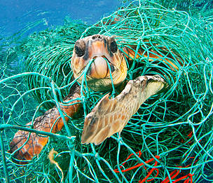
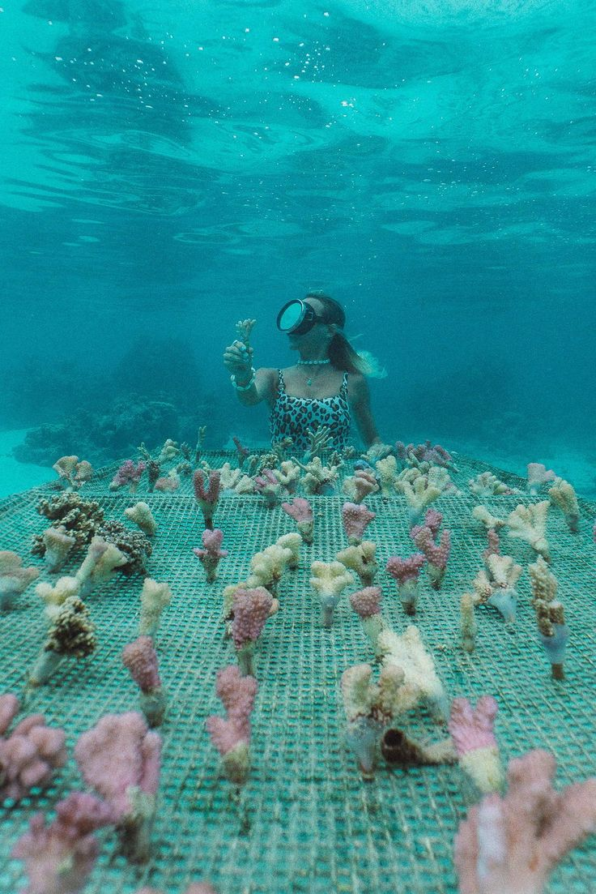
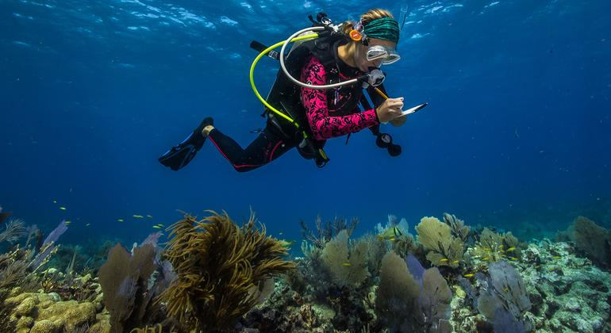
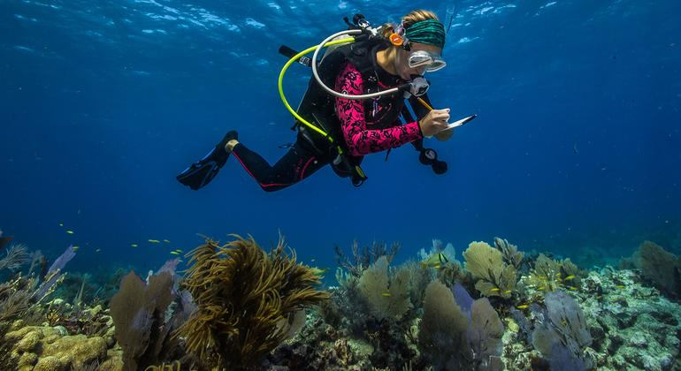

PHOTO gallery
Main Photos
Click on the main photos to view the album
1. PROTECT AND RESTORE MARINE ECOSYSTEMS
1.1 Reduce marine pollution
1.2 Protect and restore ecosystems
1.3 Reduce ocean acidification
1.4 Conserve coastal and marine areas
2. PROTECT AND RESTORE MARINE ECOSYSTEMS
2.1 Sustainable fishing


2.2 End subsidies contributing to overfishing


2.3 Support small scale fishers

3. ENHANCE MARINE RESOURCE MANAGEMENT
3.1 Increase the economic benefits from sustainable use of marine resources

3.2 Implement and enforce international sea law
4. ADVANCE OCEAN SCIENCE AND RESEARCH
4.1 Increase scientific knowledge, research and technology for ocean health


 
